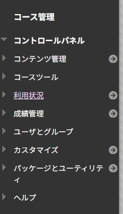

Blackboardは、世界中の大学や教育機関で利用されている代表的なLMSの一つです。 コース管理、課題提出、テスト、成績管理など、授業運営に必要な機能を一通り揃えた統合的なプラットフォームです。
 Blackboardのコース画面イメージ。左側のメニューからコンテンツや課題、成績などにアクセスできます（従来版Originalの構成を例示）。Blackboardは、機能の幅広さとカスタマイズ性の高さが特徴で、各大学の運用方針に合わせた設定がしやすいLMSです。 近年は、よりシンプルなインターフェースとモバイル利用を意識した「Blackboard Ultra」への移行が進んでいます。